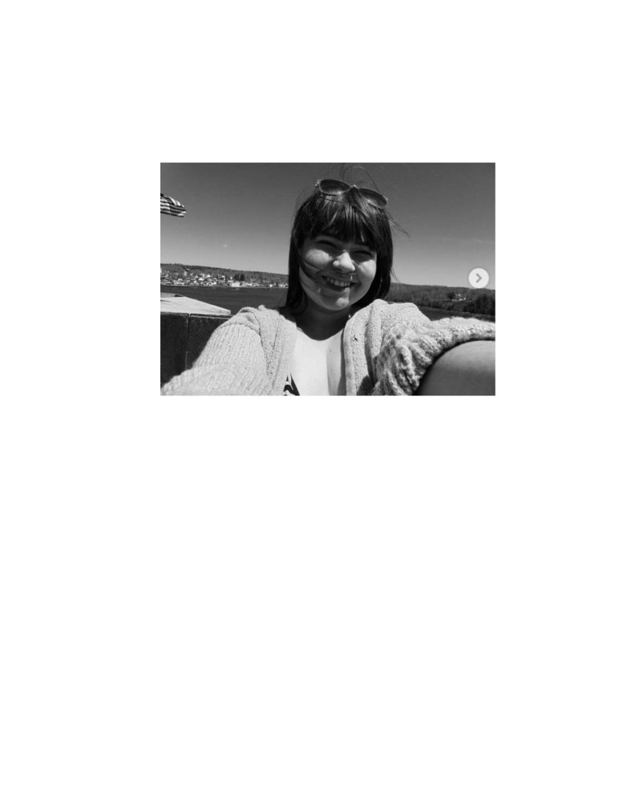
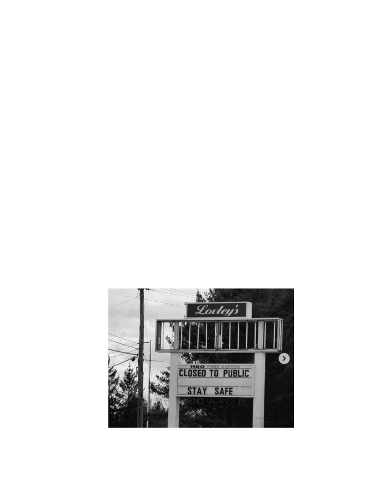
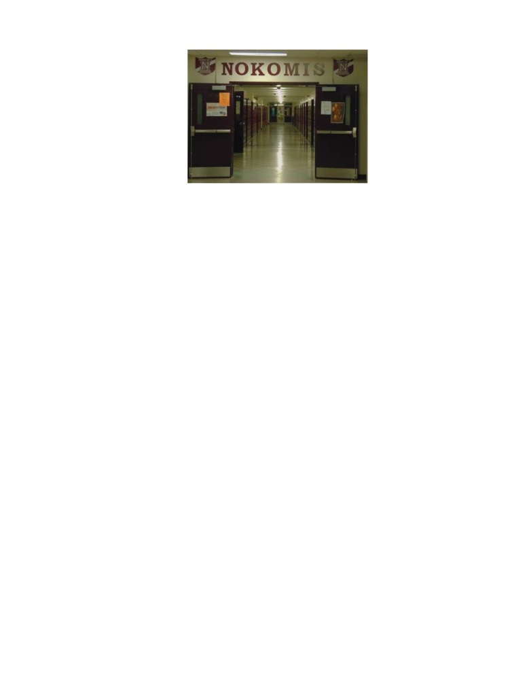
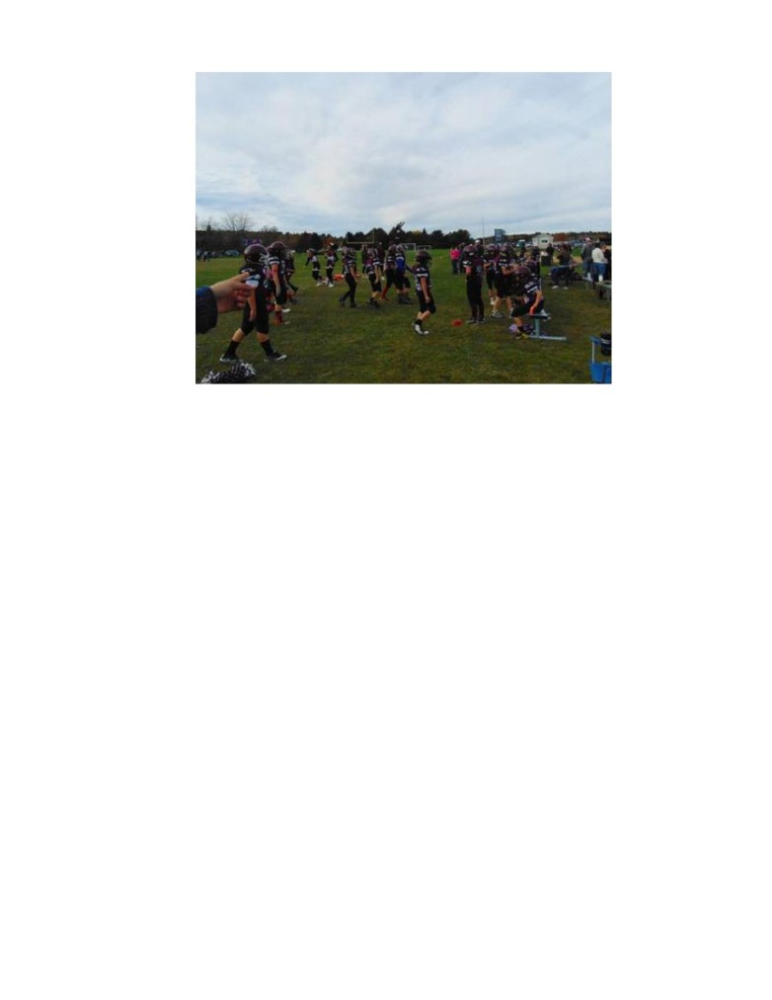
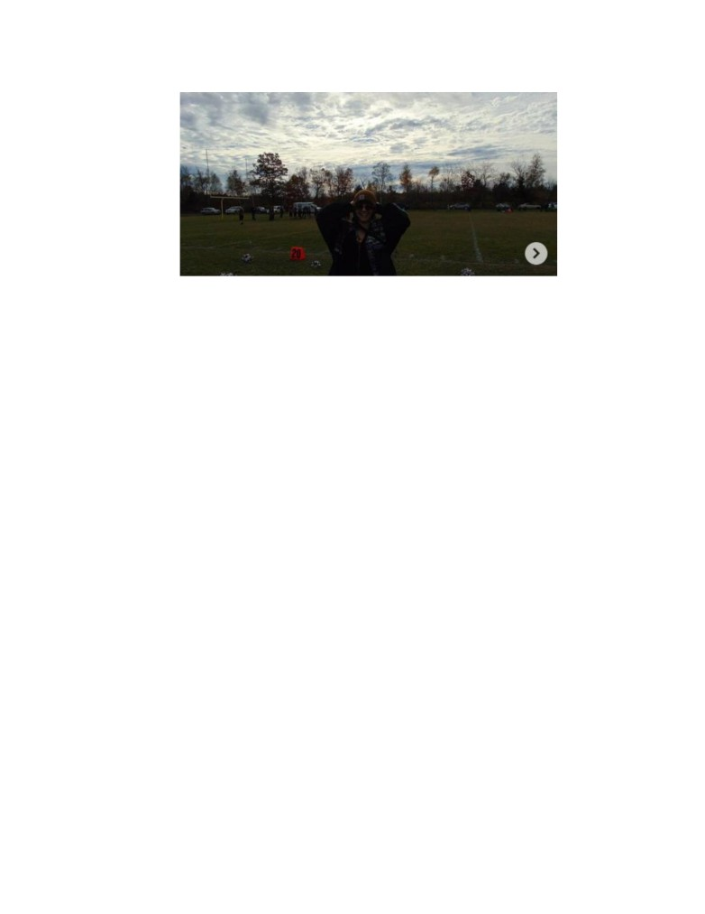

Sava Cristina-Andreea
Interviu cu Claudia, fata care a studiat un an de liceu în Maine,SUA.
(Claudia Pătrașcu, sursa foto: Instagram, @blackklowdh)
Am ales să fac un interviu cu o fostă colegă, Claudia Pătrașcu, fata care a reușit să facă un
an de studiu din perioada liceului, în Maine, Statele Unite ale Americii. Am fost curioasă să văd
diferențele pe care un elev le simte de la un sistem de învățământ la altul, ce impact are experiența
asta asupra omului și cum s-a simțit ea în Maine, și respectiv, la revenirea în România.Am realizat
că Claudia a fost extrem de curajoasă în aventura în care aceasta a fost, și că a ajutat-o în
dezvoltarea personală. După interviul cu ea, m-am gândit că fiecare om ar trebui să aibă o astfel de
experiență.
1. Când te-ai decis că ai vrea să faci asta și care a fost procesul pe care a trebuit să îl faci ?
Mi-am dorit încă de mică să ajung în Statele Unite dar mereu Am crezut că va fi ceva ce
poate se va întâmpla după liceu sau facultate. Eram prin gimnaziu când am auzit din întâmplare
la televizor ceva legat de niște burse în America prin programul FLEX și îmi amintesc cum mă
gândeam că ce fain ar fi să aplic și să și primesc una din ele odată ce ajung la liceu. În clasa a IX-
a am aplicat pentru prima oară, asta era în 2017, atunci era totul nou pentru mine dar am decis
că nu am nimic de pierdut. Tot procesul a fost relativ lung dat fiind numărul mare de aplicații. În
prima etapă am scris 3 eseuri pe niște teme date. După câteva luni am primit un mail prin care am
fost anunțată că am intrat în semifinale iar mai apoi am dat un test de engleză și am avut un

Sava Cristina-Andreea
interviu. Din păcate sau din fericire, acum că mă uit înapoi, anul respectiv nu am fost selectată
dar un an mai târziu am trecut prin același procedeu și am ajuns să fiu una dintre finaliști.
2. Cât de greu ți-a fost să lași viața din România, familia, prietenii pentru a te putea bucura de
această experiență?
Nu a fost atât de greu pe cât aș fi crezut că va fi. Știam că în câteva luni mă voi întoarce și
că am persoane care mă așteaptă. Cred că eram doar foarte entuziasmată pentru această
oportunitate și nu am fost foarte focusată pe ce las în urmă ci mai degrabă pe ce urmează, pe
următoarea etapă din viața mea.
3. Care a fost prima impresie pe care ți-a lăsat-o Maine la aterizare?
Căldură și impresia unui vis pe care nu poți realiza că îl trăiești.. Eram obosită după un
zbor foarte lung însă odată ce am ajuns în Maine, în aeroport, și mi-am văzut familia gazda am
uitat de tot, ei mă așteptau cu pancarde și îmbrățișări, ceea ce m-a făcut să simt bucurie fiind
împreună cu noua mea familie. Mai apoi când am pornit împreună cu ei spre casă și deja vorbeam
doar în engleză și când am văzut și casele și drumurile ce arată într-adevăr ca în filme am fost
copleșită de tot ceea ce trăiam.
(Sursa foto: Instagram, @blackklowdh)
Sava Cristina-Andreea
4. Cum te-ai simțit acolo față de localnici și cât de greu ți-a fost să te adaptezi?
Aș spune că primele două luni au fost puțin mai dificile, până când am reușit să mă
obișnuiesc atât cu limba cât și cu obiceiurile lor zilnice, însă acolo oamenii sunt foarte prietenoși
și m-au primit cu brațele deschise. Am avut și o familie destul de mare, bunicii locuiau aproape și
ei, și am avut noroc prin faptul că ei m-au văzut ca parte din familie încă de la început. Am locuit
într-o comunitate destul de mică, însă am cunoscut niște oameni care ți-ar oferi ajutor de orice fel
și oricând ai avea nevoie. Erau foarte uniți, lucru care pentru mine a fost relativ nou venind dintr-
un oraș în care sunt destul de mulți oameni iar majoritatea nici nu se cunosc. Cred că unul dintre
cele mai mari avantaje pe care le oferă acest program este să te plaseze în comunități care sunt
atât de primitoare încât vei aștepta cu drag să te reîntorci.
5. Cât de grele sunt cursurile la școală acolo față de ceea ce ai studiat în România?
Aș spune că diferă destul de mult de profilul la care ești în România iar acolo de pasiunile pe
care le ai. Nivelul de dificultate este relativ la fel însă liceul în America îți oferă o diversitate
extraordinară. Eu, fiind un elev străin și nefiind obligată să adun anumite credite am studiat
lucruri care mă pasionau precum arte, literatură, teatru și istorie. Mie personal școala în America
mi-a oferit tot ce îmi doream însă ce sistemul din România nu îmi permitea.
6. Consideri că te-au ajutat cunoștințele acumulate în Maine pe plan lung, în viață?
Consider că orice experiență pe care o ai te va ajuta în vreun fel. Toate lucrurile pe care
le-am învățat, le-am văzut și toți oamenii pe care i-am cunoscut au avut un impact asupra mea și
sunt sigură că această nouă perspectivă asupra lumii mă va ajuta și pe plan lung.

Sava Cristina-Andreea
(Sursa foto: Instagram, @blackklowdh)
7. Ai vrea să te întorci acolo după terminarea liceului, pentru studii superioare sau, pentru a-
ți construi o viață?
Consider că pe plan vocațional, mie una, Europa are mult mai multe de oferit și de aceea
nu cred că mă voi întoarce pentru studii acolo. Totodată nu m-aș vedea având o viață permanentă
în America însă mi-aș dori foarte mult să locuiesc pentru câțiva ani acolo și să vizitez cât mai
multe locuri.
8. Cât de mult consideri că experiența asta a avut impact asupra ta?
Consider că această experiență a avut un impact uriaș asupra mea. În primul rând mi-a
oferit oportunitatea de a ieși din zona mea de confort, obligându-mă cumva să socializez mai mult
și să nu îmi fie frică să vorbesc cu oamenii. M-a ajutat să fiu mult mai sigură pe sine și să spun
mult mai ușor, da, experiențelor noi. În al doilea rând aș spune că în urma acestei experiențe am
o perspectivă mult mai diferită legată de lume. Am realizat importanța oamenilor cu care te
înconjori, că este o lume și mai departe de granițele țării și că sunt atât de multe experiențe care
ar trebui trăite dar pentru care de multe ori nu avem curaj. Totodată am conștientizat cât de repede
trece timpul și că trebuie să tindem spre fericire și să fim sinceri cu noi, să facem lucrurile așa
cum ni le dorim. Mai presus de toate, această experiență m-a învățat să fiu independentă și să mă
cunosc mai bine.

Sava Cristina-Andreea
(Sursa foto: Instagram, @blackklowdh)
9. Cum s-a simțit revenirea înapoi în România și despărțirea de America?
Despărțirea de America a fost unul dintre cele mai dificile momente din viața mea. Când
am plecat de aici știam că mă voi întoarce în zece luni. Dar de acolo pleci cu gândul că nu știi
când îți vei revedea familia și prietenii americani. Lași în urmă oameni faini și un sistem de
învățământ mult mai avansat . Este greu pentru că, chiar dacă uneori îți este dor de casă, începi
să-ți construiești ceva frumos și acolo și uneori uiți că în scurt timp te vei întoarce acasă. Dar
totuși lași ceva din tine acolo și știi că ai un loc unde te poți întoarce oricând.
Pe de altă parte, revenirea în România a fost frumoasă la început. A fost o bucurie imensă
când mi-am reîntâlnit familia și prietenii. Mi-a lipsit mâncarea foarte mult, cultura și poate chiar
și simțul umorului pe care îl au românii. M-am întors însă într-un sistem care nu îl avantajează
mereu pe elev și care are hibe în foarte multe domenii, nici viața la americani nu este perfectă,
“visul american” se îndeplinește prin multă muncă însă sunt câteva lucruri care ar putea fi
preluate. Am învățat să apreciez România mai mult decât o făceam înainte și sunt fericită să fiu
acasă chiar dacă îmi este dor de State.
10. Ai vrea să repeți experiența sau să recomanzi cuiva să facă ceea ce ai trăit tu? Dacă da, de
ce?
Aș repeta această experiență oricând. A fost un an minunat și recomand oricui să aplice la
acest program fiindcă nu se știe niciodată. Este o experiență ce îți oferă oportunități de a vedea
locuri noi, de a cunoaște oameni minunați, de a încerca lucruri noi, de a ieși din zona ta de confort,
lucru care duce mai apoi spre dezvoltarea ta personală.

Sava Cristina-Andreea
(Sursa foto: Instagram, @blackklowdh)